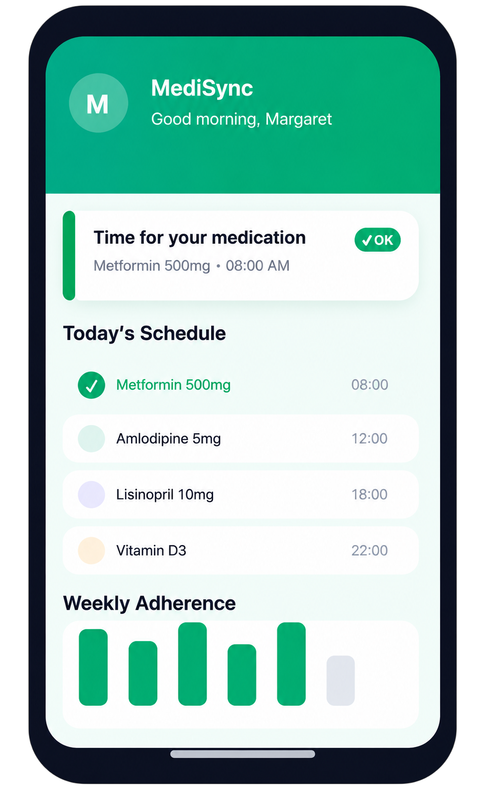

Uma caixa de medicamentos inteligente conectada a um app interativo, ajudando pessoas de idade avançada a seguir seus tratamentos de forma segura enquanto oferece aos seus cuidadores maior tranquilidade no seu acompanhamento.

Milhões de idosos e suas famílias enfrentam esses desafios todos os dias. O MediSync foi criado para resolvê-los.
Quase 50% dos pacientes idosos esquecem de tomar seus medicamentos conforme prescrito, levando a sérias complicações de saúde e readmissões hospitalares.
Tomar pílulas erradas, doses erradas ou em momentos errados é uma das principais causas de danos evitáveis em idosos, muitas vezes devido a regimes complexos de várias drogas.
Cuidadores e familiares nem sempre podem estar presentes para confirmar que os medicamentos são tomados. A distância cria ansiedade e incerteza sobre a saúde dos entes queridos.
Um sistema perfeitamente conectado que faz a ponte entre cuidadores e pacientes, onde quer que estejam.
Cronograma de medicação completa feita pelo cuidador de qualquer lugar usando o aplicativo MediSync.
A caixa desbloqueia apenas o compartimento correto no horário exato agendado. Zero confusão.
Som de alerta é emitido para lembrar o paciente quando é hora de tomar medicação.
Os sensores de precisão detectam se o remédio foi retirado ou não.
Os cuidadores sabem instantaneamente quando a medicação é tomada ou são alertados se for perdida.
Histórico completo de medicamentos e tendências de adesão em um só lugar.
O MediSync carrega tecnologia poderosa em um sistema tão simples que qualquer pessoa pode usá-lo – nenhum conhecimento técnico necessário.
Defina horários complexos de vários remédios com doses, horários e dias personalizados, tudo a partir de uma interface de calendário simples.
O compartimento correto abre automaticamente no horário programado. Nenhuma intervenção manual necessária.
O sensor confirma se a medicação foi removida fisicamente da caixa.
Aplicativos móveis nativos para ambas as plataformas, com design intuitivo otimizado para os usuários.
Trilha de auditoria completa de cada dose tomada, perdida ou tardia, com timestamps e tendências.
Monitore seu paciente/familiar, acompanhe se a adesão ao tratamento está sendo feito corretamente.
Usando o aplicativo MediSync, um cuidador ou familiar programa o cronograma completo de medicação do paciente: doses, horários e frequências.
A caixa inteligente recebe a programação via Wi-Fi e prepara cada compartimento. Os medicamentos são armazenados com segurança.
No horário agendado, o compartimento correto se abre automaticamente. Soms de áudio alertam o paciente.
Sensores de peso detectam remoção. O cuidador recebe confirmação instantânea em seu telefone ou um alerta de dose perdida, se necessário.
O MediSync não apenas organiza medicamentos, ele transforma como as famílias experimentam cuidar.
Tudo o que Você Precisa saber Sobre MediSync.
Junte-se à lista de espera e obtenha acesso antecipado, atualizações exclusivas e uma oferta especial de lançamento.
Sem spam. Cancele sua inscrição a qualquer momento.